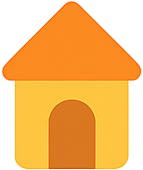

Mais do que uma creche
Uma família onde se cresce
Inspirados pela pedagogia Montessori, damos tempo ao tempo, respeitamos cada descoberta e celebramos a infância com afeto.

Um espaço feito com alma,
onde a pedagogia é vida
Acreditamos que todas as crianças são únicas e que o papel dos adultos é o de guiar com respeito, escuta e presença. No Espantalho Colorido, cultivamos a autonomia, a curiosidade e o afeto.
Criámos um ambiente seguro e bonito, onde os materiais despertam, os espaços convidam e o cuidado transborda. Aqui, os dias são feitos de:
-
Descobertas pequeninas que enchem o coração
-
Mãos pequeninas que exploram com liberdade
-
Olhares atentos que dizem “estou aqui contigo”
Mais do que uma creche, somos uma pequena grande família.
Somos educadores, cuidadores, sonhadores e, acima de tudo, apaixonados pela infância. O Espantalho Colorido é o nosso jardim encantado — e cada criança que por cá passa deixa nele um pedacinho de magia.
Montessori
no Espantalho Colorido
Aqui, seguimos o legado de Maria Montessori com carinho e rigor. O ambiente da nossa creche é preparado com intenção, os educadores são formados para observar antes de intervir, e cada criança é acompanhada como um ser único e ativo no seu próprio crescimento.
No Espantalho Colorido, a infância é tratada com respeito, liberdade e beleza — porque acreditamos, como Montessori, que a criança é a verdadeira construtora da humanidade.
Saber MaisAtividades
Iniciação ao Inglês
Primeiros passos no inglês de forma divertida e natural, com jogos e canções.
Estamos a recrutar
Educadoras de Infância
Mais do que currículos, procuramos
pessoas para crescer connosco.
No Espantalho Colorido, acreditamos que a equipa é a alma da creche. Valorizamos relações próximas, comunicação aberta e uma energia que contagia. Se és educadora de infância, apaixonada pela infância e com vontade de fazer parte de uma família onde se cresce em conjunto, fala connosco diretamente no WhatsApp. Sem formulários, sem esperas. Só uma boa conversa... e talvez o início de uma nova aventura.
Agendar Reunião
Dê o primeiro passo
e venha conhecer a nossa família.
Aqui, gostamos de conhecer as pessoas com tempo e com o coração. Sabemos que escolher uma creche é mais do que um simples pedido de informação — é o início de uma relação. Por isso, preferimos conversar diretamente, como se faz em família. Mande-nos uma mensagem no WhatsApp. Estamos deste lado, prontos para o receber e, quem sabe, dar os primeiros passos juntos.
Horário
Abertura: 08:00
Encerramento: 20:00
Licenciamentos Seg Social - Alvará nº 12345
Licenciamentos Min. Educação - DRELVT nº 12345
Politica de Privacidade